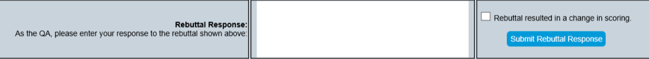
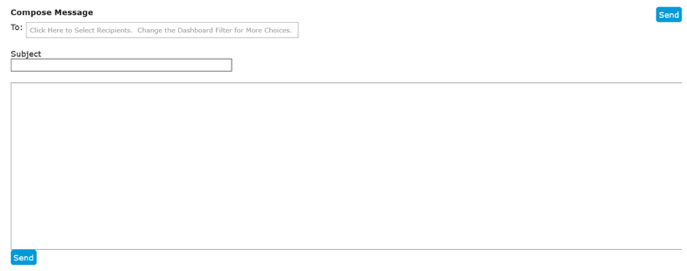
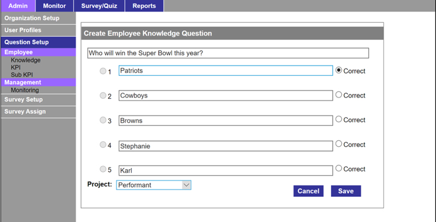
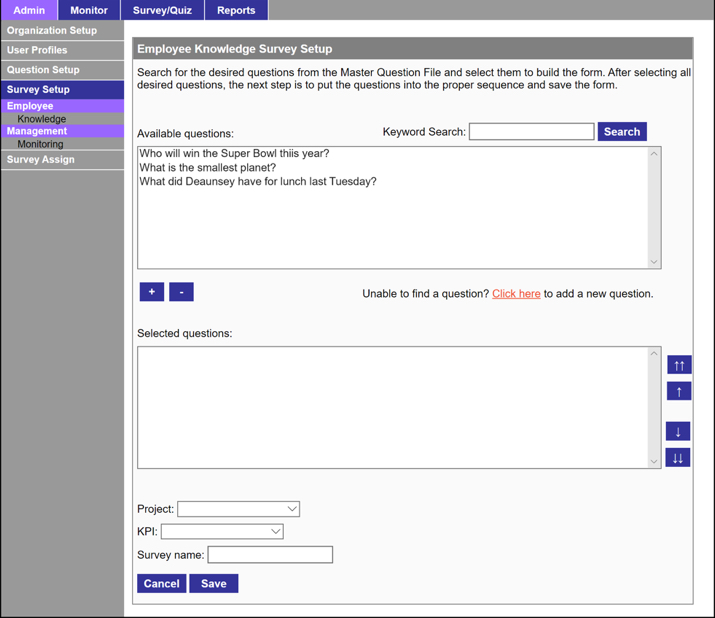
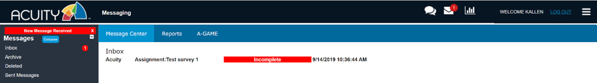
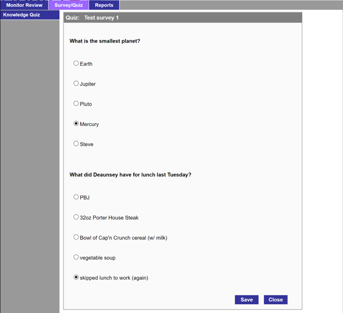
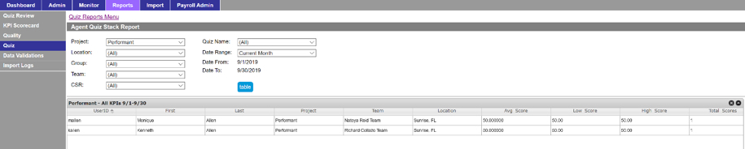
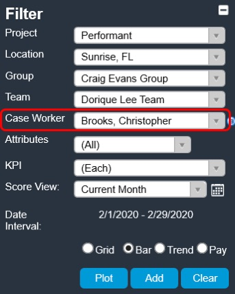

- Log In
- Reports Table
- Report Types
- Filtering the Table
- Quality Monitoring
- Quality Monitoring Form
- Scoring
- Comments and Review Notes
- Save Quality Monitors
- Acknowledgement Requests
- Rebuttals
- Important Notes
- Email (aka Acuity Message Center)
- Chat
- Quizzes, Surveys, Polls
- Creating Questions
- Creating Quizzes, Surveys, or Polls
- Assigning Quizzes, Surveys or Polls
- Reporting
- Password Reset
-
Download Guide (PDF) -
Back to Top
Performant Automated Compliance System - User Guide
System Flow for Quality Assurance Role
Login
To log in, enter URL https://performant.acuityapmr.com
Upon log in, Quality Assurance roles will be directed to the Reports table on the main dashboard. The default report view is the Processing Grid (QA) report. (See Below)
Reports Table
The Reports table lists information about quality monitors completed during the selected time frame.
Information included in the table:
- Quality Assurance analyst
- Case Number
- Review Date
- Name of CSR
- Overall score
- QA and Review Notes
- Released Status
- Team Leader
- Rebuttal and Rebuttal Response
Report Types
Selecting Reports
To navigate between the different report types, use the Show: drop down menu at the top of the report.
Processing Grid (QA)
This is the default report that is populated for Quality Assurance roles. The Processing Grid (QA) report displays all quality monitors for the selected dates, along with relevant information regarding each monitor.
Monitor Hierarchy
The Monitor Hierarchy report provides a summarized list of the quality monitors for the selected date range.
Monitor Counts
The Monitor Counts displays a total count of completed monitors, along with overall percentages for GHP Accuracy, NGHP Accuracy, and Total Accuracy.
Monitor Counts with TL/Mgr
The Monitor Counts with TL/Mgr report further drills down the data in the Monitor Counts report by Team Lead and by Manager
Filtering the Table
The Reports table can be filtered using the Filter menu. The table can be filtered by Project, Location, Group, Team, Case Worker, KPI, and Score View (Date Interval)

The Reports table can also be filtered using the Filter: search bar at the top of the table. The search bar can be used to filter specific information in the any of the columns in the table.
Note: the filter search bar is case-sensitive.
Quality Monitoring
The quality monitoring functionality is accessed by opening the Menu on the main dashboard, and selecting Monitor.
The user will be directed to the Monitor page where a new quality monitor can be created.
Each new monitor form has required fields of information that can be populated through the drop-down menus.
- Performant is used to populate the Project field
- Internal Review is used to populate the Evaluation Form field
- The Agent drop-down menu contains all active agents in Acuity to select from
- The Case Number field should include the case number that corresponds with the quality monitor
- The Evaluation Date records the time and date of the quality monitor evaluation
Once all fields have been completed, select Evaluate to open the quality monitor form.
Quality Monitor Form
Each new quality monitor form will populate with the initially entered information, along with additional fields that can be entered.
Additional fields include:
- GHP or NGHP
- Letter ID and Name (Drop-down menu that includes all Letter IDs)
- Supervisor
- Team Lead
- Manager
The quality monitor form includes a list of parameters, a checklist of input statements that map to question numbers, a disposition for each question, along with a comments box for each section.
Scoring
Each new quality monitor form is automatically populated with a score of 100%. Selecting Fail dispositions will update the overall score, based on the points assigned to each disposition.
Sections with 0 (AF) in the Points column, will update the overall score to a 0% Auto Fail if a Fail disposition is selected.
Sections with 16 (AF) in the Points section will maintain the overall score based on the point deduction and will record the monitor as an Auto Fail if a Fail disposition is selected.
Sections that only include point values in the Points section will deduct the amount of points listed from the overall score if a Fail disposition is selected. If a Fail disposition is selected, a point multiplier will also appear that can be applied to the deduction.
The Acknowledgement Required check box will automatically be checked for any monitor that is scored below a 94%.
Comments and Review Notes
Comments can be entered by Quality Assurance in the Comments box to the right of each section in the quality monitor.
Review Notes and QA Notes can be entered in each quality monitor form, in the fields provided in the bottom of the monitor.
- Review Notes that have been entered into any quality monitor are visible to everyone including, CSRs, Supervisors, Team Leads, Managers, and Quality Assurance
-
QA Notes that have been entered into any quality monitor are only
visible to Quality Assurance and Admins
- Placing the word "Hold" in the QA Notes will place the monitor on hold and prevent the form from being released
- Once ready to be released, deleting the word "Hold" will automatically release the form
To submit the monitor form, click Save Monitor
Saved Quality Monitors
Saved quality monitors will be available for all Quality Assurance roles to review in the Reports table.
Team Leads and Supervisors will be able open and review new quality monitors once the monitors are released. The release date for new quality monitors is always 9AM EST the next Monday.
Saved quality monitors can be opened directly from the Reports table by clicking the score for the selected monitor.
Acknowledgement Requests
Acknowledgement requests are sent directly from the Reports table using the Send Request link in the Acknowledgement column.
Once an acknowledgement request is sent, the employee will receive a written communication via email that an acknowledgement request has been submitted. The employee can acknowledge the monitor by opening the monitor and clicking the red acknowledgement box.
QA's and Admins are able to view if an acknowledgement request has been sent by viewing the Acknowledgement column.
- Requests that have been sent will update to Sent
- Requests that have not been sent will update to Not Sent
- Requests that do not require acknowledgment will update to Not Required
Once the monitor has been acknowledged by the employee, the Reports table will update the AckDate column to the date the employee acknowledged the monitor.
Rebuttals
Rebuttals are handled by Team Leads and Supervisors, and are accessed inside of each quality monitor form in the Rebuttal section.
The Rebuttal section allows for notes to be entered outlining the reason for the rebuttal. Once the rebuttal is submitted, the rebuttal will be submitted to the entire QA team. The QA team will receive an external email that includes details about the monitor, as well as a link to the monitor.

QA will then be able to review the rebuttal and provide a response. If the rebuttal is approved and there is a change in score, the QA should check the box Rebuttal resulted in a change in scoring.

Once the rebuttal response is ready to be submitted, the QA will click Submit Rebuttal Response.
The Team Lead and the Supervisor will receive an external email confirming that a response was received for the rebuttal. The email will include information regarding the quality monitor, as well as link to the monitor.

Important Notes
- Comments from QA cannot be changed by Team Leads or Supervisors
- Rebuttal comments from the Team Lead/Supervisors cannot be changed by QA
- QA does not have the ability to send Acknowledgement Requests
- Team Leads can see overall scores of all monitors, but cannot open other Team Leads' monitor forms
Email (aka Acuity Message Center)
Acuity houses internal messaging and chat features that can be accessed directly from the main dashboard.
To access the internal messaging system, select the messages icon at the top of the dashboard, or selecting Message Center.
Selecting either of these options will direct the user to the Message Center.

From the Message Center, users will be able to access the following messaging folders:
- Inbox – all new and previously received messages will be available to view in the Inbox
- Archive – any saved messages will be saved in the Archive folder
- Deleted – Deleted messages will be sent to the Deleted folder
- Sent Messages – Sent messages will be saved in the Sent Messages folder
To compose a new message, click Compose.

Selecting Compose will open a blank email form. (see below)
The blank form contains the following fields:
- To: – Click inside of the blank field to populate a menu of recipients to choose from. The menu will contain recipients that are assigned to the project that is currently selected in the Dashboard
- Subject – the subject field should be populated with the subject of the message
- Body of the Message – The body of the message is the field used to enter the message
Once all fields have been filled out, click the Send button to send the message.
Chat
Acuity also houses an internal instant messaging feature, Chat. To access the chat function, select the Chat icon at the top of the Dashboard.

Selecting the chat icon will open a chat window in the bottom left corner of the dashboard.

To begin a new chat, click inside of the Chat with... field to populate a list of recipients to select from. Chat has the ability to chat with one individual user, or a group of users by selecting multiple recipients.
Once users are selected, messages can be sent by entering information into the field next to the logged in user's username and pressing Enter.
To open multiple chat conversations simultaneously, select the +tm icon at the top of the chat window. This will open a list of all users assigned to the current team. By selecting the check boxes next to each user, individual chats can be initiated with each checked user.

Note: Only users that have check marks will receive chat messages. Simply check and uncheck users to add and/or remove them from the chat conversation.
Quizzes, Surveys, Polls
From an administrative standpoint, there are four core steps in the Quiz/Survey/Poll process.
- Creating questions
- Creating quizzes, surveys, or poll
- Assigning quizzes, surveys, or polls
- Analyzing the results
To access the Quiz/Survey Module
To access the quizzing module, click the Menu icon in the top right area. The screen below will be displayed.

Creating Questions
Surveys, Polls, and Quizzes require a repository of questions and answers.
To create a New question, click Question Setup from the left menu panel.

Then click the Add new button, create the question, assign it to a project and click Save.
Over time, your accumulated "knowledge-base" of questions can be reviewed and edited by clicking the Search button upon which all existing questions will be displayed in the bottom window.

Creating Quizzes, Surveys, or Polls
Now that you have questions, you can create a quiz! From the left panel, click Survey Setup | Knowledge | Add New
Select the questions you'd like included in the quiz and put them in the desired order. Then, use the Project and KPI selectors to assign the quiz to a project and relevant KPI. Name the quiz and click Save.

Assigning Quizzes, Surveys or Polls
When you're ready to send your survey to recipients, click Survey Assign | Employee | Knowledge
In the screen displayed, select a Project, the relevant Quiz/Survey/Poll and target recipients, then click Send.

Once sent, quiz recipients will receive notification in their Acuity messaging inbox.
Clicking the prompts will display the Quiz to the recipient. The recipient selects answers or responses and click Save to submit.
Reporting - Quiz/Survey/Poll
To analyze the results of your quiz, survey and poll initiatives, go to Admin | Reports and select Quiz from the menu in the left panel.

Select the report you'd like to view, then specify the Project, Quiz Name, and Date Range, then click the Table button.
Once sent, quiz recipients will receive notification in their Acuity messaging inbox.
Clicking the prompts will display the Quiz to the recipient. The recipient selects answers or responses and click Save to submit.
Password Reset
-
To reset an employee's password, first select that employee from
the "Case Worker" filter on the left

-
Open the menu and select "Reset CSR Password"

-
Once clicking "Reset CSR Password", a prompt will appear asking
you to confirm the password change, along with what the new password will be

- To confirm the password change, simply click "OK"
Back to Top